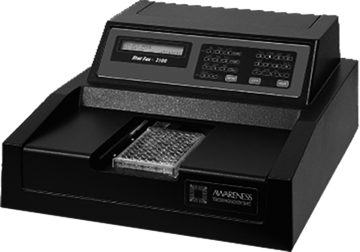

STAT FAX 2100
Lector de microplacas

DESCRIPCIÓN:
Lector de Microplacas.
Sistema óptico bicromático o monocromático.
• El procesamiento de los datos incluye regresión, ajuste de curva y cut off de absorbancia (controlados paso a paso por el usuario).
• Hasta 36 tests en memoria.
• Pantalla: LCD de dos líneas alfanuméricas, 24 caracteres por línea.
• Teclado: teclado de membrana de 29 teclas. Puerto serial: 2400 baudios, 1 bit de inicio, 8 de datos, 1 de parada, sin paridad.
• Memoria: la memoria RAM es soportada por la batería, almacena 36 tests y curvas aprox.
• Velocidad: lee e imprime absorbancias de 96 pocillos en dos minutos aproximadamente.
• Modos de cálculo: calibración de un punto, ajuste de curva punto a punto, regresión polinomial, regresión lineal, cut off de absorbancia, multipunto % de absorbancia.
CARACTERÍSTICAS:
Funciones adicionales: totalmente comandado por el usuario, indicadores y mensajes de error, etc.
• Incluye salidas por puerto paralelo y serial (incluye cable serial).
• Trabaja con impresoras HP®, Canon®, Epson® y equivalentes. Requisitos: Puerto paralelo o serial. 80 columnas.
Requisitos de energía: 115 V o 230 V CA, 50-60 Hz.
Certificaciones: NRTL y CE.
Registro: 1766E2014 SSA
DATOS COMPLEMENTARIOS: Para información adicional comunicarse a:
WIENER LAB.
REPRESENTACIONES LABIN MÉXICO, S. A. de C.V.
Teléfonos: (55) 5524-0771, 5200-2500
Lada sin costo: 01 800-581-4616
e-mail: contacto@wiener-mex.com
www.wiener-lab.com.ar